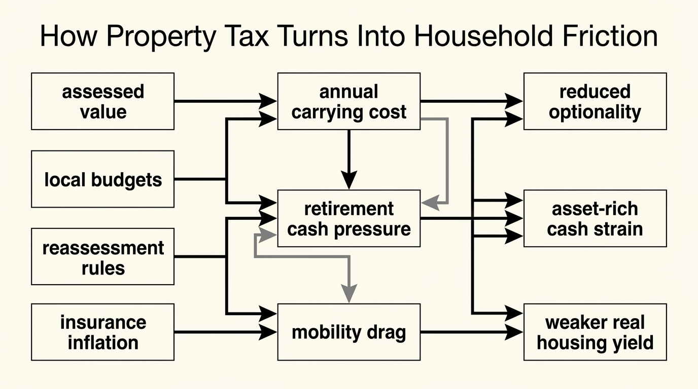

The Property Tax Drag
Households often talk about homeownership as if the mortgage were the whole carrying cost. That is false. Property tax is a recurring claim on the balance sheet that persists after the loan is refinanced, paid down, or retired entirely. In many places it behaves less like a footnote and more like permanent rent owed to the local fiscal system.
Why This Cost Is Systematically Underpriced
Property tax is underpriced partly because it is familiar. Families budget for it, escrow it, or let it hide inside monthly payment automation. What disappears from view is the structural fact: this is not a one-time transaction cost. It is a recurring drag on housing cash flow whose rate, assessed base, and local political logic can all move over time.
That matters because a home can be mortgage-free and still fail the cash-flow test. Tax, insurance, maintenance, and utilities can keep the asset expensive long after the debt story feels finished. Readers who treat paid-off housing as near-zero carry often discover too late that they own an illiquid asset with a stubborn annual operating claim attached to it.
Established fact: property tax is a recurrent housing holding cost and a major revenue source for local governments, which means ownership cash flow remains exposed to local fiscal policy even after financing terms improve. Reasoned inference: households that ignore this drag systematically overestimate the retirement value, mobility value, and effective yield of owner-occupied housing.

A Holding Cost, Not a Closing Cost
The first analytical correction is simple. Property tax belongs to the holding period, not the purchase event. Closing costs are painful once. Property tax keeps arriving. That changes how a household should compare ownership with renting, evaluate a second home, or judge whether a low mortgage rate really preserved wealth.
This is why The Hidden Costs of Ownership and The Mortgage Lock-In Trap belong beside this article. A low-rate loan can make the monthly payment feel efficient while taxes, insurance, and deferred upkeep continue to erode flexibility underneath. The result is an asset that looks cheap relative to current market rates but still behaves like a high-carry position.
Assessment Drift Turns Static Homes Into Moving Obligations
Many households mentally anchor property tax to the year they bought the house. Local systems do not owe them that anchor. Reassessment cycles, millage changes, school levies, and municipal budget pressure can all change the bill. Even where caps exist, they may reset after sale, vary by jurisdiction, or fail to keep pace with insurance and fee growth occurring around the tax base.
The implication is that tax drag is partly a policy risk. Two houses with identical market values can impose different long-run burdens depending on assessment method, local service demand, and whether the tax system updates aggressively or lags until it resets abruptly. That is one reason The Global Housing Divergence is not only about mortgage rates and supply. Local fiscal architecture changes the economics of staying put.
Retirees and Mortgage-Free Owners Feel It First
Property tax becomes most visible when income falls or stabilizes. A retiree with valuable but illiquid housing may discover that the house did not solve the cash-flow problem at all. The mortgage is gone, but the recurring tax claim remains. If the local area also carries high insurance, aging infrastructure, or rising service needs, the household can become asset-rich and budget-tight at the same time.
That is the same logic behind The Asset-Rich, Cash-Poor Paradox. Wealth embedded in a primary residence is not equivalent to spendable resilience. A home can support balance-sheet optics while weakening optionality because the annual cost of holding it keeps climbing faster than the owner’s flexible income.

Tax Drag Also Changes Mobility
Property tax affects more than affordability. It affects move decisions. A household comparing relocation options should not ask only what each house costs to buy. It should ask what each jurisdiction costs to hold. A cheaper purchase in a high-tax regime can become more expensive than a pricier house in a lower recurring-tax system once several years of carry are modeled honestly.
That is why tax drag belongs in a mobility framework as well as a housing framework. For some owners the true friction is not that they cannot sell. It is that every plausible next location imposes a different recurring policy claim, changing whether a move improves resilience or simply swaps one cost stack for another.
| Question | If tax drag is low | If tax drag is high |
|---|---|---|
| Paid-off home value | More likely to support cash-flow relief | Can remain expensive despite zero mortgage balance |
| Retirement durability | Housing costs may stay manageable | Housing can keep pressuring fixed or declining income |
| Move decision | Purchase price may dominate comparison | Recurring jurisdiction cost becomes central |
| Wealth interpretation | Home equity is somewhat more usable | Nominal equity can overstate real resilience |
Decision-Grade Take for Readers
Property tax should be modeled as part of the asset’s required yield, not as miscellaneous overhead. The right ownership question is not “Can I buy this house?” It is “What recurring cash claim does this jurisdiction impose, and how does that change my flexibility over the full holding period?” Once asked that way, many apparently attractive housing positions look thinner.
- Model property tax as recurring carry, not as background noise.
- Stress-test retirement scenarios using the full housing stack after the mortgage is gone.
- Compare jurisdictions on holding cost, not only on purchase price.
- Do not treat home equity as liquid resilience when local policy keeps imposing a large annual claim.
Known, Inferred, and Unknown
| Category | Assessment |
|---|---|
| Known | Property taxes are recurrent taxes on immovable property and remain part of ownership cost throughout the holding period. |
| Known | Owner housing-cost surveys explicitly include taxes because they materially affect affordability and local housing conditions. |
| Known | Local tax structure can vary widely across jurisdictions, changing the true long-run carry of otherwise similar homes. |
| Inferred | Households that anchor too heavily on mortgage payment or purchase price tend to overstate the resilience value of owner-occupied housing. |
| Unknown | How much future fiscal pressure individual jurisdictions will push into property-tax bases versus other local revenue channels as housing affordability remains strained. |
Source Frame
This article uses the U.S. Census Bureau page on Housing Costs for Owners for the official owner-cost framework that explicitly includes property taxes in housing affordability measurement.
For the role of property taxation in public finance, it uses the Census Bureau’s Annual Survey of State and Local Government Finances. For the housing-tax lifecycle and recurrent-tax treatment across countries, it uses the OECD report Housing Taxation in OECD Countries and its section on housing tax policies and recurrent taxes on immovable property.
The unresolved variable is not whether property tax matters. It is how many households are still treating it like a side expense when it is actually a long-duration policy claim on housing cash flow.